This the multi-page printable view of this section. Click here to print.
Integrations
1 - FiftyOne
FiftyOne is an open-source tool for building high-quality datasets and computer vision models. FiftyOne supercharges your machine learning workflows by enabling you to visualize datasets and interpret models faster and more effectively.
FiftyOne provides an API to create tasks and jobs, upload data, define label schemas, and download annotations using CVAT, all programmatically in Python. All of the following label types are supported, for both image and video datasets:
- Classifications
- Detections
- Instance segmentations
- Polygons and polylines
- Keypoints
- Scalar fields
- Semantic segmentation
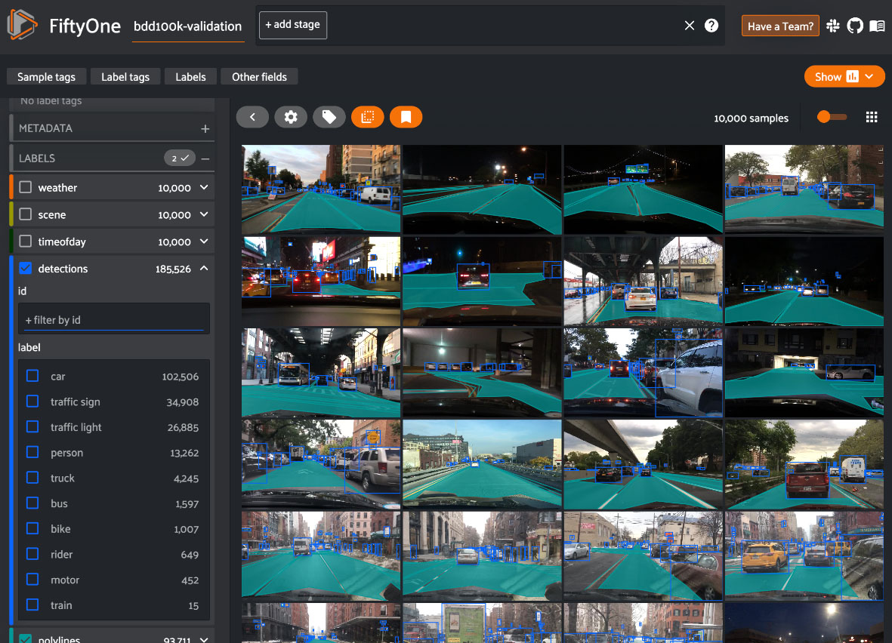
2 - Toloka
To have your dataset annotated through Toloka, simply establish a project in CVAT set the pricing, and let Toloka annotators take care of the annotations for you.
See:
- Glossary
- Preconditions
- Creating Toloka project
- Adding tasks and jobs to the Toloka project
- Adding instructions for annotators to the Toloka project
- Toloka pool setup
- Changing Toloka pool
- Reviewing annotated jobs
- Moving Toloka pool to archive
- Moving Toloka project to archive
- Resource sync between CVAT and Toloka
Glossary
This page contains several terms used to describe interactions between systems and actors. Refer to the table below for clarity on how we define and use them.
| Term | Explanation |
|---|---|
| Toloka | Toloka is a crowdsourcing platform that allows users to assign tasks to a broad group of participants, often termed “crowd workers”. In the context of this article, when we mention Toloka, we are specifically referring to one of its UI interfaces. |
| CVAT | CVAT is a tool designed for annotating video and image data for computer vision tasks. In this article’s context, when we reference CVAT, we mean one of its UI interfaces. |
| Requester | An individual who establishes an annotation project within CVAT determines the price, creates tasks and jobs within the project, and then releases it on Toloka. |
| Toloker | A person who annotates the Requester’s dataset. |
Preconditions
Actor: Requester.
Requester must have a CVAT account and Toloka Requester account.
To get access to the feature in CVAT, send request to CVAT Support
Creating Toloka project
The requester can set up a project within CVAT and subsequently connect it to Toloka, making it accessible for annotations by Tolokers.
To initiate your Toloka project, proceed with the following steps:
-
Log in to CVAT and initiate a new Project.
Here you can can setup user guide which will be shown on Toloka platform, see Adding instructions for annotators to the Toloka project. -
Navigate to the project page and select Actions > Setup crowdsourcing project.
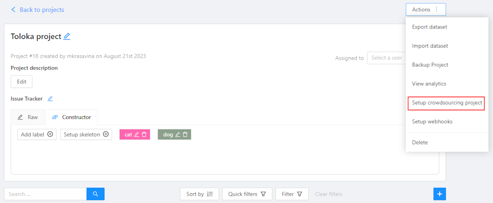
-
Fill in the following fields in the Setup crowdsourcing project form:
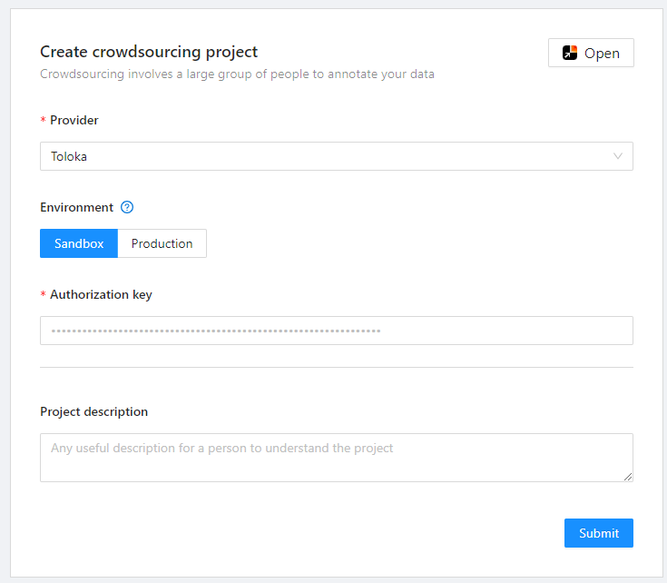
- Provider: Choose Toloka as your provider.
- Environment: Select either Sandbox for a testing environment or Production for a live environment.
- API key: Enter the Requester API key.
- Project description (Optional): Provide a brief description of your project.
-
Click Submit. A pop-up indicating Toloka Project Created will appear, along with the Update project form.

- will take you to the published project in Toloka.
 will take you back to the project in CVAT.
will take you back to the project in CVAT.
In CVAT, all projects related to Toloka will be labeled as Toloka.
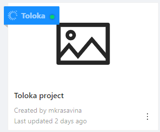
The status indicator changes based on the state of the project:
- Green - active
- Dark grey - archived
Adding tasks and jobs to the Toloka project
To add tasks to the Toloka project, see Create annotation task.
On step 2 of the Create annotation task procedure, from the drop-down list, select your Toloka project.
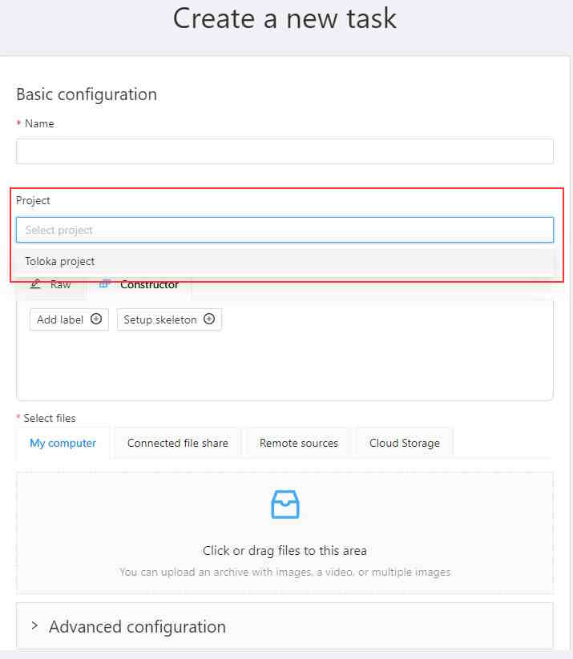
Adding instructions for annotators to the Toloka project
To add instructions for annotators to the Toloka project, see Adding specification to Project documentation or Adding instructions video tutorial.
Toloka pool setup
After creating a task and its associated jobs in CVAT, you’ll need to configure a Toloka pool, specifying all task requirements and setting the price for task completion.
To set up the Toloka pool, do the following:
-
Open Toloka task, go to Actions > Setup Toloka pool.
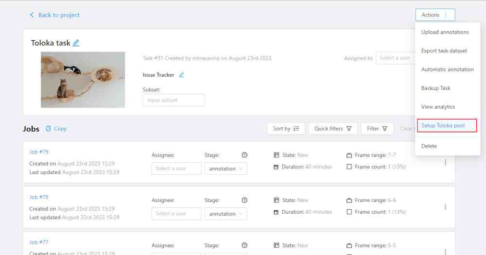
-
In the Create crowdsourcing task form, fill in the following fields:
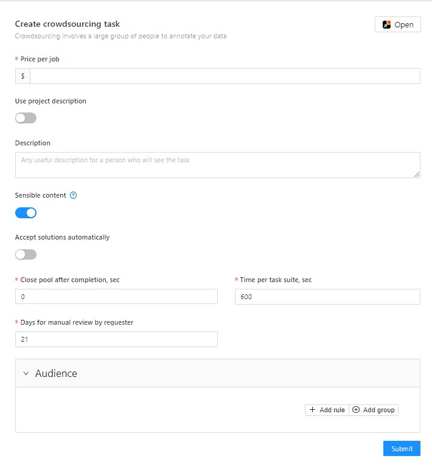
- Price per job: Specify the payment amount for completing one job within the project.
- Use project description: Switch this toggle if you want to use the overarching project description for individual tasks.
- Description: Provide details about the pool. This field is visible only when the Use project description toggle is off.
- Sensible content: Switch this toggle if your dataset contains images intended for an adult audience.
- Accept solutions automatically: Enable this if you wish for completed jobs to be automatically accepted.
- Close pool after completion, sec: The interval during which the pool will remain open from the moment all tasks are completed. Minimum — 0, maximum — 259200 seconds (three days).
- Time per task suite, sec: Enter the time limit, in seconds, within which each job must be completed. The Toloker will see the deadline in the task information on the main Toloka page and also in CVAT interface. Uncompleted tasks are redistributed to other Tolokers.
- Days for manual review by requester: Specify the Review period in days — the number of days for the review (from 1 to 21 days from the task completion date). The Toloker will see the deadline in the task information on the main Toloka page.
- Audience: Add rules to make jobs available only to Tolokers who meet certain criteria. For example, you might require Tolokers to be proficient in English and have higher education. These rules operate based on filter principles. For more information, see Toloks Filters documentation, CVAT Filters documentation or CVAT Filters video tutorial.
- 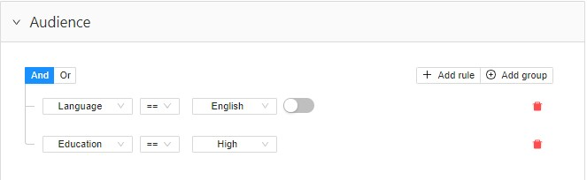
-
Click Submit. You will see the Toloka task was created pop-up and the Update pool form.
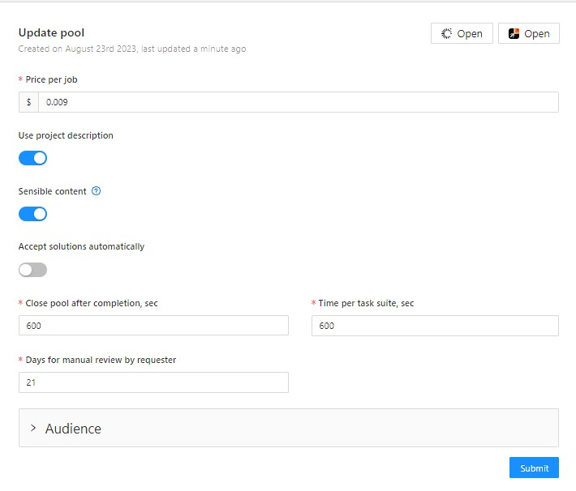
- opens pool in Toloka.
- opens task in CVAT.
-
Open the CVAT task that was published to Toloka, go to Actions > Start Toloka pool.
Project, that you created will now be visible to Tolokers.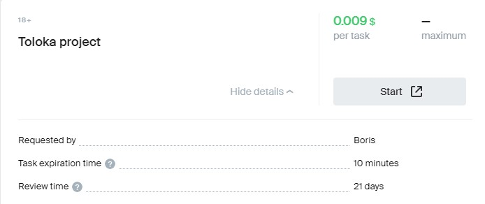
Pools status indicator has the following states:
- Green - open for annotating
- Light gray - closed
- Dark grey - archived
Changing Toloka pool
To change started Toloka pool, you need to stop it first.
- Open Toloka task, Actions > Stop Toloka pool.
- Implement changes.
- Open Toloka task, go to Actions > Start Toloka pool.
Reviewing annotated jobs
In case the pool you’ve created are not in the Accept solutions automatically mode, you will need to manually review and accept them within time limits that were defined in the Toloka pool settings.
To approve or reject the job, use the Accept and Reject buttons.

Accepting job
To accept the annotated job, do the following:
-
Go to the Toloka task and open the job.
-
Review the result of annotation and in case all is fine, on the top menu, click Accept.
-
Optionally, you may add comment.

-
Click OK.
Rejecting job
Note, that Toloker can open dispute and appeal the rejected job on the Toloka platform.
To reject the annotated job, do the following:
-
Go to the Toloka task and open the job.
On the top menu, you will see Accept and Reject buttons. -
Review the result of the annotation and in case something is wrong, on the top menu, click Reject.
-
Add comment why this work was rejected

-
Click OK.
After you reject the job, the menu bar will change and only the Accept button will be active.
Rejected job can be accepted later.
Moving Toloka pool to archive
After annotation is complete, you can move the Toloka pools to archive without archiving the whole Project.
Note, that to archive pool, all jobs within task must be in the Complete state.
Note, that pool must accepted and without active assignments on the Toloka side.
Keep in mind, that if you Rejected the job, it will not become unassigned immediately, to give Toloker time to open a dispute.
To archive complete jobs, do the following:
- Open Toloka task, and go to Actions.
- (Optional) If the task is ongoing, select Stop Toloka pool.
- Select Archive Toloka pool
- In the pop-up click OK.
Moving Toloka project to archive
After annotation is completed, you can move the Toloka project to the archive.
Note that all jobs must be complete. Tasks must not have active assignments or assignments that are being disputed. All project pools must be closed/archived.
-
Open Toloka project, go to Actions > Archive Toloka project.
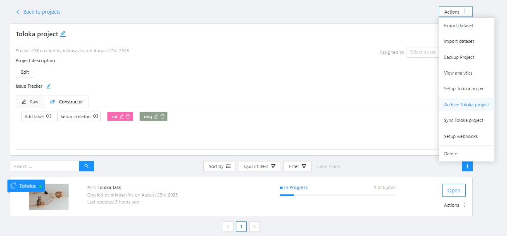
-
In the pop-up, click Yes.
Resource sync between CVAT and Toloka
There are two types of synchronization between CVAT and Toloka:
- Explicit synchronization: Triggered manually by the requester by clicking the Sync Toloka project/Sync Toloka pool button within the CVAT interface.
- Implicit Synchronization: Occurs automatically at predetermined intervals. Resources that have been requested by users will be synchronized without any manual intervention.
Acceptance/Rejection synchronization
In addition to project and pool synchronization, it is essential to synchronize the status of assignments. If a requester accepts or rejects an assignment through Toloka’s client interface, this action automatically synchronizes with CVAT to ensure that the data remains current and consistent across both platforms.